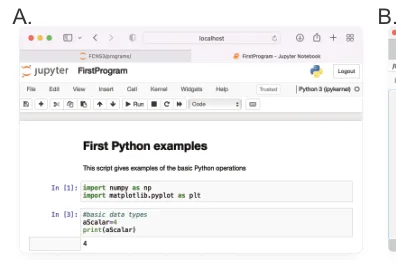
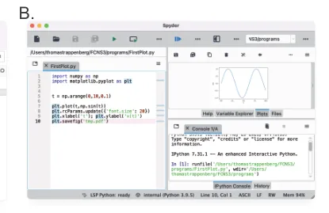

Python là ngôn ngữ lập trình mà chúng tôi sử dụng để minh họa phần lớn các khái niệm được thảo luận trong cuốn sách này. Python là một ngôn ngữ lập trình bậc cao, và chúng tôi sẽ sử dụng nó thuần túy như một công cụ khoa học. Chúng ta sẽ đi qua một chương trình chứa hầu hết các lệnh và cấu trúc được sử dụng trong sách.
2.1 Môi trường lập trình Python
Phần giới thiệu ngắn gọn về lập trình khoa học với Python này tập trung vào các phép toán được sử dụng trong cuốn sách. Điều này bao gồm việc làm việc với vectơ và ma trận dựa trên thư viện NumPy. Python là một ngôn ngữ lập trình bậc cao tương tự như Matlab và R, và ngày càng trở nên phổ biến. Lý do chính chúng tôi sử dụng Python trong cuốn sách này là vì nó miễn phí và hiện cung cấp sự hỗ trợ đáng kể cho ngày càng nhiều lĩnh vực như học máy, thống kê, thị giác máy tính và tâm vật lý học. Chúng tôi giả định người đọc đã quen thuộc phần nào với các khái niệm lập trình và tập trung vào phần giới thiệu nhanh về môi trường cụ thể cùng các thư viện hỗ trợ được dùng trong sách.
Các chương trình trong cuốn sách này dựa trên Python 3, và chúng tôi giả định rằng tất cả các gói liên quan đã được cài đặt. Tại thời điểm này, chúng ta cần các thư viện NumPy và Matplotlib cũng như một môi trường lập trình như Jupyter hoặc Spyder. Tài liệu hướng dẫn chi tiết và bài học cho Python cùng các công cụ liên quan có sẵn tại https://www.python.org.
Chúng ta bắt đầu ở đây bằng việc sử dụng một môi trường lập trình có tên là Jupyter. Cụ thể hơn, trong chương này chúng ta sẽ sử dụng Jupyter Notebook, cho phép viết mã với trình soạn thảo đơn giản và hiển thị chú thích cùng kết quả đầu ra trong cùng một tệp. Jupyter được truy cập qua trình duyệt và chứa các ô nhập liệu để thêm mã và chú thích. Sau đó, các ô này có thể được thực thi và phản hồi từ lệnh in hoặc biểu đồ sẽ được hiển thị ngay bên dưới mỗi khối trong cùng một tài liệu. Điều này rất hữu ích khi ghi chép các đoạn mã ngắn và bài tập nhỏ. Một ví dụ về chương trình trong môi trường Jupyter được minh họa ở bên trái trong Hình 2.1.
Các tệp Jupyter có phần mở rộng .ipynb và có thể được tải trong môi trường trình duyệt. Chương trình Jupyter notebook có giao diện để khởi chạy trình thông dịch Python và chạy từng phần riêng lẻ hoặc toàn bộ mã. Phần tiêu đề có chú thích được tạo ra bằng cách thực thi một ô văn bản (text cell). Điều này hữu ích cho việc tạo tài liệu hướng dẫn. Ngoài ra, notebook có thể được phân phối kèm theo kết quả đầu ra, giúp thuận tiện cho việc trao đổi về mã nguồn. Các con số ở bên trái cho thấy số thứ tự liên tiếp của các lần gọi tới trình thông dịch. Trong ví dụ minh họa, ô chương trình đầu tiên được chạy trước tiên để tải các thư viện, và sau đó ô thứ hai được chạy hai lần; đó là lý do tại sao ký hiệu [3] được hiển thị ở phía trước ô này.
Nguyên lý Khoa học Thần kinh Tính toán. Ấn bản thứ ba. Thomas P. Trappenberg, Oxford University Press. © Oxford University Press 2023. DOI:10.1093/oso/9780192869364.003.0002


Hình 2.1 (A) Một ví dụ về chương trình Python trong Jupyter notebook và (B) môi trường lập trình Spyder.
Khi chương trình đang chạy, ký hiệu [∗] sẽ được hiển thị. Ô thứ hai tạo ra kết quả đầu ra là 4, được hiển thị ngay bên dưới ô đó. Trong các phần sau, chúng tôi đơn giản cung cấp các chương trình Python dưới dạng tệp .py. Khi đó sẽ dễ dàng hơn để sử dụng các môi trường lập trình khác tùy chọn, bao gồm cả việc sao chép mã vào Jupyter notebook. Một ví dụ về môi trường nâng cao hơn với hỗ trợ lập trình truyền thống hơn là Spyder. Công cụ này bao gồm trình soạn thảo, cửa sổ dòng lệnh và các hỗ trợ lập trình bổ sung như hiển thị biến và hỗ trợ gỡ lỗi. Chương trình này mô phỏng môi trường lập trình truyền thống hơn như những môi trường có trong Matlab và R. Một góc nhìn ví dụ về Spyder được minh họa ở bên phải trong Hình 2.1. Ở bên trái trong môi trường này là cửa sổ soạn thảo có hiển thị tô sáng cú pháp để viết chương trình, và ở góc dưới bên phải là bảng điều khiển (console) để khởi chạy các lệnh dòng như thực thi và thông dịch mã. Chương trình ví dụ vẽ một đường cong sin, cũng được hiển thị ngay trên đó. Vì Python là ngôn ngữ thông dịch, ta có thể làm việc với các chương trình theo cách tương tác, chẳng hạn như chạy một mô phỏng rồi sau đó vẽ đồ thị kết quả theo nhiều cách khác nhau. Môi trường phát triển Spyder được khuyến nghị cho các dự án lớn hơn.
2.2 Các thành phần ngôn ngữ cơ bản
2.2.1 Các kiểu dữ liệu cơ bản và mảng
Là một ngôn ngữ lập trình đa năng, Python chứa các khái niệm lập trình cơ bản như kiểu dữ liệu cơ bản, vòng lặp, câu lệnh điều kiện và chương trình con. Chúng tôi sẽ điểm qua ngắn gọn cú pháp liên quan kèm các ví dụ được cung cấp trong tệp FirstProgram.ipynb. Ngoài các cấu trúc lập trình cơ bản đó, mọi ngôn ngữ lập trình bậc cao như Python đều được hỗ trợ bởi một số lượng lớn thư viện cho phép nhiều phong cách lập trình và các hàm chuyên dụng. Ở đây chúng tôi chủ yếu quan tâm đến tính toán khoa học cơ bản, trái ngược với lập trình hệ thống, và vì thế chúng ta cần các mảng đa chiều. Do đó, chúng tôi xây dựng hầu hết các chương trình trong cuốn sách này dựa trên thư viện NumPy. NumPy cung cấp hỗ trợ cơ bản cho các cấu trúc và hàm khoa học phổ biến như các hàm lượng giác và bộ sinh số ngẫu nhiên. Quan trọng nhất, nó cung cấp hỗ trợ cho các mảng N chiều. NumPy đã trở thành tiêu chuẩn trong tính toán khoa học với Python. Chúng tôi sẽ sử dụng các cấu trúc đã được thiết lập vững chắc này để triển khai vectơ, ma trận và các mảng nhiều chiều hơn. Đôi khi chúng tôi cũng sử dụng thư viện SciPy, vốn được xây dựng trên nền tảng NumPy với nhiều hàm khoa học hơn như các thủ tục tích phân số và thống kê.
Một cách thức phổ biến để nhập thư viện NumPy vào chương trình của chúng ta là ánh xạ nó tới không gian tên ‘np’ bằng lệnh import numpy as np. Bằng cách này, các phương thức hoặc hàm cụ thể của NumPy được truy cập với tiền tố np. Bên cạnh việc nhập NumPy, chúng tôi luôn nhập thêm một thư viện vẽ đồ thị vì việc vẽ kết quả sẽ rất hữu ích và là cách phổ biến để truyền đạt kết quả. Cụ thể, chúng tôi sử dụng gói PyPlot phổ biến của thư viện Matplotlib. Do đó, chúng ta gần như luôn bắt đầu chương trình của mình bằng hai dòng lệnh
Listing 2.1 FirstProgram.ipynb (phần 1) 1 import numpy as np 2 import m a t p l o t l i b . pyplot as p l t
Hãy cùng đi qua chương trình trong môi trường Jupyter có tên FirstProgram. Những dòng mã này nhằm mục đích chỉ ra cú pháp của các cấu trúc lập trình cơ bản mà chúng ta cần trong cuốn sách này. Chúng ta bắt đầu bằng việc minh họa các kiểu dữ liệu cơ bản sẽ được sử dụng thường xuyên. Chúng ta chủ yếu làm việc với dữ liệu số, trong đó vô hướng (scalar) là ví dụ đơn giản nhất,
Listing 2.2 FirstProgram.ipynb (phần 2) 1 # b a s i c data types 2 a S c a l a r = 4 3 p r i n t ( a S c a l a r )
>> 4
Ở đây chúng tôi hiển thị cả mã nguồn lẫn phản hồi khi chạy chương trình với hàm print(). Các dòng chú thích có thể được thêm vào bằng ký hiệu dấu thăng #. Kiểu của các biến được gán động trong Python. Nghĩa là, một tên biến và vùng nhớ tương ứng được cấp phát ngay lần đầu tiên biến có tên này được sử dụng ở vế trái của toán tử gán ‘=’. Trong trường hợp này, đó là một giá trị số nguyên, nhưng chúng ta cũng có thể gán một biến giá trị thực với aScalar=4.0.
Phần lớn thời gian chúng ta sẽ làm việc trên một tập hợp lớn dữ liệu nên cần có một khái niệm để truy cập tập hợp dữ liệu đó. Trong Python, có một số dạng danh sách (list). Ví dụ, một danh sách một chiều cơ bản được tạo trong Python chuẩn bằng cách đặt một danh sách phân tách bởi dấu phẩy trong cặp ngoặc vuông như
Listing 2.3 FirstProgram.ipynb (phần 3) 1 a L i s t = [ 1 , 2 , 3 ] 2 p r i n t ( a L i s t )
>> [1, 2, 3]
Những danh sách như vậy hữu ích để thu thập dữ liệu. Tuy nhiên, vì chúng ta cần thực hiện các phép toán học được định nghĩa chặt chẽ trên các danh sách dữ liệu, việc đưa vào một cấu trúc linh hoạt hơn cho các tập dữ liệu đó dưới dạng mảng NumPy sẽ rất hữu ích.
Trước khi tiếp tục, có lẽ nên ôn lại một số quy ước đặt tên. Một cấu trúc dữ liệu cơ bản cho một tập hợp dữ liệu được gọi là ‘mảng’ (array) trong khoa học máy tính. Trái ngược với các khái niệm cấu trúc dữ liệu đơn giản này, các khái niệm toán học về vectơ hoặc ma trận khác ở chỗ chúng bao gồm các phép toán được định nghĩa chặt chẽ trên những cấu trúc dữ liệu đó. Do đó, khái niệm toán học về vectơ là một mảng một chiều mà trên đó một số phép toán được định nghĩa, chẳng hạn như cộng hai vectơ cùng chiều bằng cách cộng các thành phần của chúng, hoặc nhân một vectơ với một vô hướng bằng cách nhân từng thành phần của vectơ với vô hướng đó. Tương tự, ma trận là một cấu trúc hai chiều với các phép toán được định nghĩa tương ứng. Chúng ta thậm chí có thể tổng quát hóa điều này lên số chiều cao hơn, và các cấu trúc toán học như vậy được gọi là ten-xơ (tensor). Sẽ rất thuận tiện nếu xem phép toán vectơ hoặc ma trận chỉ là một trường hợp đặc biệt của các phép toán ten-xơ tổng quát.
Để tạo một mảng NumPy, chúng ta sử dụng hàm array() của NumPy. Ví dụ, một danh sách Python 1 chiều có thể được chuyển thành một vectơ NumPy như sau,
Listing 2.4 FirstProgram.ipynb (phần 4) 1 aVector = np . a r r a y ( [ 1 , 2 , 3 ] ) 2 p r i n t ( aVector ) 3 p r i n t ( aVector [ 0 ] , aVector [ −1]) 4 p r i n t ( aVector [ 1 : 3 ] )
>> [1 2 3]
1 3 [2 3]
Như minh họa trong câu lệnh print thứ hai, chúng ta có thể truy cập một phần tử của mảng bằng các chỉ số đặt trong ngoặc vuông. Phần tử đầu tiên trong mảng có chỉ số 0. Do đó, lệnh in trả về giá trị 1. Sẽ rất hữu ích nếu coi chỉ số này là độ dời (offset) tính từ phần tử đầu tiên. Chỉ số −1 truy cập phần tử cuối cùng trong vectơ. Lệnh print thứ ba cho thấy cách truy cập một dải chỉ số. Đáng tiếc là trong NumPy không có sự phân biệt giữa vectơ hàng và vectơ cột, vì vậy điều này cần được cân nhắc kỹ hơn khi sự phân biệt là cần thiết. Chúng ta sẽ quay lại điểm này ngay sau đây.
Tương tự như việc định nghĩa vectơ bằng NumPy, một mảng hai chiều kèm theo định nghĩa phù hợp về các phép toán học được gọi là ma trận và có thể được định nghĩa và truy cập bằng NumPy như sau,
Listing 2.5 FirstProgram.ipynb (phần 5) 1 aMatrix = np . a r r a y ( [ [ 1 , 2 , 3 ] , [ 4 , 5 , 6 ] ] ) 2 p r i n t ( aMatrix ) 3 p r i n t ( aMatrix [ 1 , 2 ] )
>> [[1 2 3]
[4 5 6]] 6
Ký hiệu này cho thấy một mảng hai chiều được xem trong cú pháp Python như một danh sách một chiều chứa các danh sách một chiều. Lưu ý cách các phần tử riêng lẻ của mảng được truy cập; chỉ số đầu tiên chỉ định vị trí theo cột (hàng thứ mấy), và chỉ số thứ hai chỉ định vị trí theo hàng (cột thứ mấy). Điều này tương đương với ký hiệu toán học phổ biến cho ma trận. Với điều này, chúng ta có thể chỉnh lại ký hiệu cho các vectơ ở trên bằng cách định nghĩa một vectơ hàng như sau
Listing 2.6 FirstProgram.ipynb (phần 6a) 1 aVector = np . a r r a y ( [ [ 1 , 2 , 3 ] ] )
Sau đó, nó có thể được chuyển đổi thành một vectơ cột với sự trợ giúp của phép chuyển vị
Listing 2.7 FirstProgram.ipynb (phần 6b) 1 p r i n t ( aVector . T)
>> [[1]
[2] [3]]
Sau khi định nghĩa các mảng NumPy như vậy, chúng ta có thể áp dụng các hàm toán học lên các mảng NumPy này. Ví dụ, một số phép toán theo từng phần tử (element-wise) trên ma trận là
Listing 2.8 FirstProgram.ipynb (phần 7) 1 matrix2 = np . a r r a y ( [ [ 5 , 5 , 6 ] , [ 7 , 8 , 9 ] ] ) 2 r e s u l t 1 = aMatrix ∗matrix2 # element−wise 3 r e s u l t 2 = aMatrix ∗∗3 # element−wise e x p o n e n t i a t i o n : 4 r e s u l t 3 = aMatrix > 3 # f i n d the i n d i c e s where ( matrix > 3) 5 p r i n t ( r e s u l t 1 , r e s u l t 2 , r e s u l t 3 )
>> [[ 5 10 18]
[28 40 54]] [[ 1 8 27]
[ 64 125 216]] [[False False False]
[ True True True]]
Phép nhân ma trận cơ bản, còn gọi là tích vô hướng (dot product) hay tích trong, được triển khai dưới dạng hàm np.dot(a,b) và trong Python 3 còn có dạng toán tử @,
Listing 2.9 FirstProgram.ipynb (phần 8) 1 r e s u l t = aMatrix @ matrix2 . T 2 p r i n t ( r e s u l t )
>> [[ 33 50]
[ 81 122]]
Qua đó chúng ta đã đưa phép chuyển vị vào thông qua đặc tả toán tử ‘.T’. Những đặc tả toán tử như vậy rất phổ biến trong các cấu trúc lập trình hướng đối tượng.
Chúng ta thường xuyên cần truy cập các tập con dữ liệu trong mảng và cũng cần gộp các mảng lại. Để truy cập một tập con của mảng, trước tiên ta có thể tạo một vectơ chỉ số gọi là idx dưới đây, chỉ định các chỉ số mà ta muốn xử lý chẳng hạn như phần tử thứ nhất và thứ hai ở hàng thứ hai của ma trận tên là aMatrix đã định nghĩa trước đó
Listing 2.10 FirstProgram.ipynb (phần 9) 1 idx = ( [ [ 1 ] , [ 0 , 2 ] ] ) 2 p r i n t ( aMatrix [ t u p l e ( idx ) ] )
>> [4 6]
Một ví dụ hữu ích khác là tạo một vectơ từ một danh sách,
tương đương với array(range(10)), và trích xuất mỗi phần tử cách quãng hai bước của một vectơ,
Listing 2.12 FirstProgram.ipynb (phần 11) 1 x = np . arange (10) # same as a r r a y ( range ( 1 0 ) ) 2 p r i n t ( x [ : : 2 ] )
>> [0 2 4 6 8]
Cách đánh chỉ số mảng này giống với x[0:-1:2] vì các biên mặc định cho giới hạn thứ nhất và thứ hai là phần tử đầu tiên và phần tử cuối cùng. Việc gộp hai mảng được thực hiện bằng phương thức concatenate() của NumPy,
Listing 2.13 FirstProgram.ipynb (phần 12) 1 r e s u l t = np . c o n c a t e n a t e ( ( aMatrix , matrix2 ) , a x i s =0) 2 p r i n t ( r e s u l t )
>> [[1 2 3]
[4 5 6] [5 5 6] [7 8 9]]
Một lệnh hữu ích để kiểm tra kích thước và hướng của ma trận là
Listing 2.14 FirstProgram.ipynb (phần 13) 1 r e s u l t . shape
>> (4, 3)
Như đã đề cập, chỉ số thứ nhất chỉ định hàng đi xuống dưới và chỉ số thứ hai chỉ định cột đi sang phải. Đôi khi chúng ta muốn sắp xếp lại các phần tử của mảng, việc này có thể thực hiện bằng hàm reshape,
Listing 2.15 FirstProgram.ipynb (phần 14) 1 p r i n t ( r e s u l t . reshape ( 2 , 6 ) )
>> [[1 2 3 4 5 6]
[5 5 6 7 8 9]]
Cho đến nay, chúng ta đã thảo luận về các kiểu dữ liệu số cơ bản mà chúng ta cần. Bên cạnh các kiểu dữ liệu số này, tất nhiên còn có những kiểu khác như ký tự. Dữ liệu văn bản đơn giản được đặt trong dấu ngoặc kép hoặc ngoặc đơn như sau.
Listing 2.16 FirstProgram.ipynb (phần 15) 1 t e x t = ’ Hello World ! ’ 2 p r i n t ( t e x t )
>> Hello World!
2.2.2 Luồng điều khiển
Sau đây, chúng tôi trình bày ba cấu trúc lập trình nền tảng: vòng lặp, câu lệnh điều kiện và hàm. Để lặp qua một đoạn mã, ta có thể sử dụng cấu trúc sau,
Listing 2.17 FirstProgram.ipynb (phần 16) 1 f o r i in range ( 4 ) : 2 p r i n t ( i )
>> 0 1 2 3 bắt đầu từ i=0 và tăng từng bước một cho đến i=3. Lưu ý rằng Python nhạy cảm với vị trí mã; đoạn mã được thụt lề đại diện cho khối câu lệnh được thực thi bên trong vòng lặp. Một câu lệnh điều kiện có dạng
Listing 2.18 FirstProgram.ipynb (phần 17 1 i f s c a l a r <1: 2 p r i n t ( " t r u e " ) 3 e l s e : 4 p r i n t ( " f a l s e " )
>> false
Có thể dùng dấu ngoặc đơn hoặc ngoặc kép trong câu lệnh print. Một lần nữa hãy lưu ý đến việc thụt lề để xác định khối mã cho mỗi điều kiện.
2.2.3 Hàm
Cuốn sách này cố gắng sử dụng các ví dụ tối giản không đòi hỏi các kỹ thuật cấu trúc mã nâng cao như lập trình hướng đối tượng, mặc dù các kỹ thuật đó đều có sẵn trong Python. Một kỹ thuật tái sử dụng mã cơ bản là định nghĩa hàm. Trong Python, điều này có thể thực hiện theo mẫu sau. Để cấu trúc mã tốt hơn, cụ thể là định nghĩa một số đoạn mã có thể tái sử dụng, chúng ta có tùy chọn định nghĩa các hàm như
Listing 2.19 FirstProgram.ipynb (phần 18) 1 def func ( arg1 , arg2 =10): 2 arg = arg1+arg2 3 arg1 = arg1 +100 4 r e t u r n arg ; 5 a = 1 6 p r i n t ( func ( 2 ) , func ( a , 2 ) , a )
>> 12 3 1
Các biến đơn giản được truyền theo giá trị (pass by value) trong Python, nhưng các đối tượng phức tạp hơn có thể được truyền theo tham chiếu. Do đó, cần thận trọng khi thay đổi nội dung của các biến được truyền vào trong hàm. Hàm có thể được gọi với một đối số, và trong ví dụ trên chúng tôi đã chỉ ra cách cung cấp một đối số mặc định.
Cũng rất hữu ích khi định nghĩa phiên bản nội tuyến (inline) của một hàm, chẳng hạn như định nghĩa hàm sigmoid logistic
Listing 2.20 FirstProgram.ipynb (phần 19) 1 l o g i s t = lambda x : 1 / (1 + np . exp(−x ) )
Chúng ta sẽ sử dụng hàm nội tuyến này ở bên dưới để vẽ đồ thị của nó.
2.2.4 Vẽ đồ thị
Vẽ đồ thị cho dữ liệu là một công cụ khoa học hữu ích, và chúng tôi sẽ sử dụng thư viện vẽ đồ thị khoa học phổ biến Matplotlib http://matplotlib.org/, cụ thể là gói pyplot cung cấp một giao diện đơn giản hơn một chút bên trong gói matplotlib. Chúng ta đã nhập thư viện này ở đầu đoạn mã. Sử dụng thư viện này, một ví dụ về đồ thị đường cơ bản được đưa ra trong đoạn mã sau, và đồ thị kết quả được hiển thị trong Hình 2.2.
Listing 2.21 FirstProgram.ipynb (phần 20) 1 t = np . arange ( −10 ,10 ,0.1) 2 p l t . p l o t ( t , l o g i s t ( t ) ) 3 p l t . rcParams . update ({ ’ f o n t . s i z e ’ : 28}) 4 p l t . x l a b e l ( ’ t ’ ) ; p l t . y l a b e l ( ’x ( t ) ’ )
Lưu ý rằng luôn nên gắn nhãn cho các trục tọa độ. Nếu bạn cần đưa hình vẽ vào bài báo, hãy sử dụng lệnh
Listing 2.22 FirstProgram.ipynb (phần 21) 1 p l t . s a v e f i g ( ’ fileName . pdf ’ )
2.2.5 Đo thời gian chạy chương trình
Một số chương trình có thể cần thời gian nhất định để chạy, và có thể cần ước lượng thời gian chạy với một số ví dụ nhỏ hơn và đo thời gian. Việc này
1.00
0.75
0.50 y
0.25
0.00
Hình 2.2 Ví dụ về đồ thị cho hàm logistic (sigmoid) f(x) = 1 1+e−x bằng thư viện Matplotlib.
có thể được thực hiện bằng cách nhập gói time và sử dụng hàm clock() theo cách sau.
Listing 2.23 FirstProgram.ipynb (phần 22) 1 import time 2 t i c = time . time ( ) 3 toc = time . time ( ) 4 p r i n t ( toc −t i c )
>> 8.678436279296875e-05
2.3 Hiệu năng mã và vectơ hóa
Học máy là làm việc với các tập hợp dữ liệu lớn. Những dữ liệu như vậy được lưu trữ trong cơ sở dữ liệu, bảng tính, hoặc đơn giản là trong các tệp văn bản, nhưng để xử lý chúng, chúng ta tải chúng vào các mảng. Vì chúng ta định nghĩa các phép toán trên các mảng như vậy, tốt hơn hết là coi các mảng này như vectơ, ma trận, hoặc tổng quát hơn là ten-xơ. Các ngôn ngữ lập trình truyền thống như C và Fortran yêu cầu chúng ta viết mã lặp qua tất cả các chỉ số để chỉ định các phép toán được định nghĩa trên toàn bộ dữ liệu. Ví dụ, như được cung cấp trong chương trình MatrixMultiplication.ipynb, hãy định nghĩa hai ma trận ngẫu nhiên kích thước n × n bằng bộ sinh số ngẫu nhiên của NumPy cho các số phân bố đều,
Listing 2.24 MatrixMultiplication.ipynb (trích đoạn) 1 a = np . random . rand ( n , n ) 2 b = np . random . rand ( n , n )
và một ma trận số không có cùng kích thước,
Listing 2.25 MatrixMultiplication.ipynb (trích đoạn) 1 c = np . zeros ( ( n , n ) )
Khi đó ta có thể viết đoạn mã cộng hai số bằng vòng lặp tường minh qua tất cả các chỉ số như sau
Listing 2.26 MatrixMultiplication.ipynb (trích đoạn) 1 f o r i in range ( n ) : 2 f o r j in range ( n ) : 3 c [ i ] [ j ]= a [ i ] [ j ]+ b [ i ] [ j ]
Trong các ngôn ngữ lập trình bậc cao như Python, Matlab và R, người ta thường viết các phép toán như vậy dưới dạng cô đọng như c=a@b
Hiện nay người ta thường gọi phong cách lập trình này là mã vectơ hóa (vectorized code). Mã vectơ hóa như vậy không chỉ dễ đọc hơn nhiều mà còn thiết yếu để viết mã hiệu quả. Lý do là các lập trình viên hệ thống có thể triển khai những thủ tục đó rất hiệu quả, và điều này rất khó để sánh kịp với các phép toán chỉ số tường minh tổng quát hơn nhưng kém hiệu quả.
Để minh họa vấn đề hiệu năng, hãy đo thời gian thực hiện của phép nhân ma trận. Chúng ta bắt đầu như thường lệ bằng cách nhập các thư viện chuẩn NumPy, Matplotlib và cả time. Sau đó, chúng ta định nghĩa một phương thức tên là matmulslow thực hiện phép nhân ma trận bằng cách lặp tường minh qua các chỉ số,
Listing 2.27 MatrixMultiplication.ipynb (trích đoạn) 1 def matmulslow ( a , b ) : 2 m = a . shape [ 1 ] 3 c=np . zeros ( (m,m) ) 4 f o r i in range (m) : 5 f o r j in range (m) : 6 f o r k in range (m) : 7 c [ i , j ] = c [ i , j ]+ a [ i , k ]∗b [ k , j ] 8 r e t u r n c ; và một phiên bản nhanh của phép toán này trong phương thức matmulfast gọi phương thức dot của NumPy,
Listing 2.28 MatrixMultiplication.ipynb (trích đoạn) 1 def matmulfast ( a , b ) : 2 r e t u r n a@b
Sau đó chúng ta đánh giá thời gian mà các thủ tục này tiêu tốn bằng đoạn mã kiểm thử sau,
Listing 2.29 MatrixMultiplication.ipynb (trích đoạn) 1 s i z e = np . a r r a y ( [ ] ) 2 time1 = np . a r r a y ( [ ] ) 3 time2 = np . a r r a y ( [ ] ) 4 f o r n in range (10 , 13 0 , 10) : 5 p r i n t ( n ) 6 s i z e = np . append ( size , n ) 7 a = np . random . rand ( n , n ) 8 b = np . random . rand ( n , n ) 9 c = np . zeros ( ( n , n ) ) 10 11 t i m e s t a r t = time . time ( ) 12 c = matmulslow ( a , b ) 13 time1 = np . append ( time1 , time . time ()−t i m e s t a r t ) 14 15 t i m e s t a r t = time . time ( ) 16 c = matmulfast ( a , b ) 17 time2 = np . append ( time2 , time . time ()−t i m e s t a r t )
Hình 2.3 Thời gian thực thi của phép nhân ma trận đối với các kích thước ma trận khác nhau. Đường màu đỏ biểu diễn thời gian thực thi cho cách triển khai theo từng phần tử, trong khi đường màu xanh dương biểu diễn thời gian thực thi của phiên bản vectơ hóa với hàm dựng sẵn. Việc sử dụng các hàm dựng sẵn hiệu quả hơn nhiều so với lập trình theo từng thành phần của phép nhân ma trận này.
Đồ thị thời gian thu được được hiển thị trong Hình 2.3. Điều này không chỉ cho thấy sự chênh lệch thời gian có thể rất đáng kể đối với các mảng lớn hơn, mà còn cho thấy tốc độ tăng theo quy mô (scaling) rất khác nhau. Một số lo ngại rằng các ngôn ngữ máy tính thông dịch chạy chậm xuất phát từ việc triển khai kém hiệu quả của những lập trình viên chưa quen với phong cách lập trình này. Đây thường là phần thách thức nhất đối với các lập trình viên có kinh nghiệm với các ngôn ngữ kiểu C khi chuyển sang làm quen với mã vectơ hóa, nhưng phong cách lập trình như vậy là thiết yếu để tạo ra mã nguồn hiệu quả.